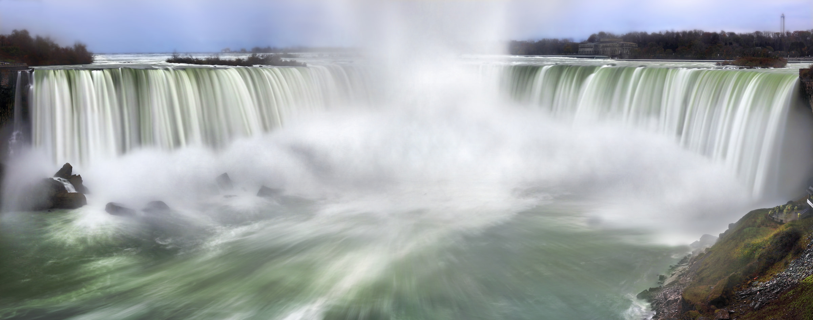
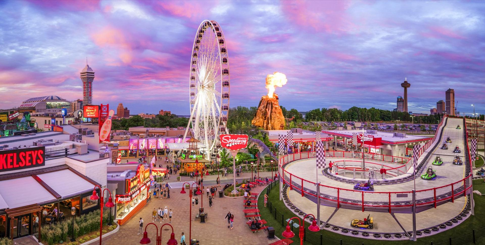

Niagara Falls Day Trip
Friday, July 4th, 2025
The Canadian side of Niagara Falls, located in the city of Niagara Falls, Ontario, offers a breathtaking view of the Horseshoe Falls, the most expansive and powerful section of the waterfall. The city itself is a vibrant hub of activity, with the falls as its centerpiece. Lush parks and meticulously maintained walkways line the Niagara Parkway, allowing visitors to stroll along the river and enjoy panoramic views of the cascading water. The city features an array of attractions, including the iconic Skylon Tower, which provides a bird's-eye view of the falls and the surrounding landscape. Niagara Falls, Ontario, combines natural beauty with the charm of a bustling tourist destination, offering both serene moments by the water and lively entertainment options.
General Day Plan
-
Arrive at Oakville GO Station for 9:30-9:35am
-
GO train departs at 9:42am - no breakfast will be served on board, eat before hand or bring food on the train.
-
GO train arrives in Niagara Falls at 11:30am
-
From the GO station in Niagara Falls it is a 35 minute walk to the main downtown area
-
Or we can take a bus for about 10 minutes (Greenline South bus) to arrive at the bottom of Clifton Hill
-
Individual or group activities
-
Group lunch at Boston Pizza (2pm), if you would like to check out the menu before hand click here
-
Individual or group activities
-
Arrive at Go station in Niagara Falls to depart at 5:30-5:40pm
-
GO train departs at 5:53pm NOTE: the next available train after this departs at 10:42pm and will arrive back in Oakville at 12:32am. This is a good option if you want to stay and see fireworks for Independence Day (4th of July).
-
GO train arrives back in Oakville at 7:58pm
-
Group dinner at Swiss Chalet (8:00pm), if you would like to see the menu click here
Bookings
GO train tickets can be booked ahead of time though they are unrefundable so we suggest that you only buy a few days beforehand to be able to check the weather as this trip may get moved if there is a weather warning.
The fare as of June 2025 is approximately $17.55 CAD one way and same for return trip (total $35.10 CAD)
To book your tickets and check the fare prices go to link and fill in all necessary information - Oakville GO to Niagara Falls GO, July 4th, 2025.
Some of the attractions listed below such as ziplinging should be booked ahead of time by at least one-two days to ensure good timing.
Suggested Activities
-
Bird Kingdom website
- if you wish to participate in a bird feeding make sure you check the times this is available
-
Clifton Hill amusements (multiple) website

-
haunted/scare houses
-
wax figure museums
-
ferris wheel
-
dinosaur mini golf
-
and much more!
-
Niagara city cruises (go on a boat near the Falls) website
-
Niagara Falls zipline (less scary than you think) website
-
Journey behind the Falls (Rachel and Steven have not tried and therefore can not vouch for it but it is probably cool) website
-
Multiple casinos (if you are so inclined) website
-
Wonderful desserts (below are must trys!)
Restaurant Choice
Rachel and Steven will be going to Boston Pizza for lunch, everyone coming on the day trip is welcome to join us there, alternatively below are listed other restaurant options you may like.
Other Possible Restaurant Options:
Low Range
-
Wendy's menu
-
Pizza (multiple places)
Mid Range
-
Kelsey's Original Roadhouse menu
-
Montana's BBQ & Bar menu
-
The WORKS menu
-
Boston Pizza (oddly enough only available in Canada, not Boston) menu
High Range
-
Rainforest cafe menu
-
Queen Victoria Place menu
Copyright ©2025, by Rachel Echevarria-Porter